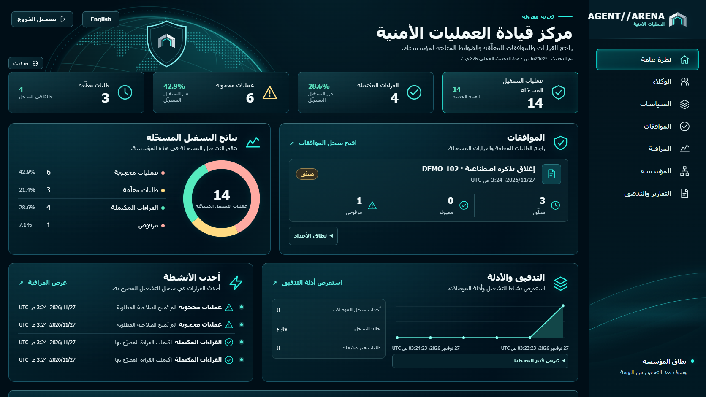

الدليل الهندسي
استكشف الدليل الهندسي.
ابحث في سجلات التقييم أو وسّع موضوعًا أو انتقل إلى التسجيل الأصلي.
مسارات القرار
DEMO-102 تجربة حتمية محلية. يقترح الوكيل أداة وموردًا، ويقدّم Blue إشارة استشارية. وتتحقّق البوابة من الهوية والمؤسسة والمهمة مقارنة بالطلب وحالة التذكرة.
تُسمح القراءة عند طلب التلخيص. أما طلب الإغلاق ضمن مهمة التلخيص فينتج DENIED_SCOPE_ESCALATION وتبقى التذكرة مفتوحة. الإغلاق المطلوب صراحة ينتج PENDING_APPROVAL ويحتاج إلى مراجع آخر، ويتحقق الخادم من انتهاء الصلاحية والبيانات وإصدار التذكرة قبل الكتابة الاصطناعية.
سجل الإصدار المدمج السابق · 24 نوفمبر 2026
24 نوفمبر 2026 · اختبارات مستضافة خاصة بالتطبيق بعد الدمج النهائي؛ نجحت المهام الثلاث. نجح 728 اختبارًا على كل من Python 3.12 و3.13، مع تخطّي 33 اختبارًا مخصصًا لـPostgreSQL وتحذير واحد متعلق بـStarlette/httpx في كل مهمة. شغّلت مهمة PostgreSQL 17.12 الحالات الـ33 كلها دون تخطٍّ. بذلك يبلغ عدد حالات Python المميزة 761.
وثّق Node نجاح 13 حالة للواجهة وتوثيق API في بيئة DOM محاكاة، منها حالتان لخصوصية واجهة التوثيق. شمل المعيار تسع حالات اصطناعية، مع صفر استدعاءات للمزوّدين وصفر عمليات كتابة اصطناعية غير مصرّح بها. سجّل المؤشر النصي خمس إيجابيات صحيحة وإيجابية كاذبة واحدة وصفر سلبيات كاذبة وثلاث سلبيات صحيحة. تخصّ الأعداد مجموعة ثابتة.
21 نوفمبر 2026 · في تجربة حية منفصلة ومصرّح بها نجح طلب GitHub GET واحد واستدعاء Groq واحد للنموذج openai/gpt-oss-20b، وكلاهما HTTP 200. اقتصر محتوى التذكرة المنقول على العنوان والنص ضمن حدود محددة. سجّل التدقيق نجاح العمليتين وتطابقت بصمة SHA-256 للمدخل. لم يُحتفظ بالنص الناتج لتقييم جودته بشكل مستقل.
التحديث النهائي للتطبيق الخاص: توثيق API محلي متوافق مع سياسة CSP وجرد للاعتماديات (SBOM). لم تبلغ المراجعتان الآليتان عن نتائج أمنية على شجرة المصدر المراجعة. يبقى تنبيه ضمن شجرة بناء ReDoc تحت المتابعة؛ لم يثبت وجود مسار تنفيذ في المتصفح ولم يُستبعد نهائيًا. يقتصر الاستخدام على التقييم المعزول، ولا يُعرّض ReDoc للعامة قبل حسم قابلية التأثر. لا يمثل ذلك اختبار اختراق مستقلًا.
التقييم المؤسسي في بيئة اختبار معزولة
27 نوفمبر 2026 · لقطات فعلية من Chrome لنسخة لوحة التشغيل التي خضعت للمراجعة.
ما يشاهده المسؤول
تعرض الصور جلسة مؤقتة جديدة بسجلات اصطناعية. تحتفظ أدلة التقييم أعلاه بتاريخها ونطاقها الأصليين.
تجربة مستقلة من اثنتي عشرة خطوة
جلب طلب HTTPS واحد التذكرة الاصطناعية المصرّح بها. رفضت البوابة الإجراء الذي افتقر إلى إذن الأداة. ظل الإغلاق معلّقًا حتى نفّذت أتمتة الاختبار الموافقة عبر حساب مراجع مستقل، ثم تغيّرت حالة التذكرة وأصبح رقم مراجعتها 1. أعاد طلب بيانات المؤسسة الأخرى 404، وأعاد توقف الموصّل 503. تضمّن تقرير JSON المصرّح به أحداث القرار، وأُعيد التحقق من سلامتها بعد استعادة قاعدة البيانات الاصطناعية.
أسئلة تسبق التجربة الميدانية
تتطلب الرقابة التشغيلية المستقلة والاستعادة خارج المضيف وقبول المخاطر أدلة منفصلة. التجربة الاصطناعية المحلية محدودة ولا تقيس أداء أحمال العملاء أو جميع سلوكيات الوكلاء.
نتائج النسخة المرشحة المصححة · 25 نوفمبر 2026
وثّقت أدلة Linux المستضافة بتاريخ 25 نوفمبر 2026 للنسخة 264cfe5 نجاح 965 حالة Python مميزة. نجحت الحالات العامة الـ928 على كلّ من Python 3.12 و3.13، ونجحت الحالات الـ37 الإضافية على PostgreSQL 17.12 الحقيقي دون تخطٍّ. نجحت حالات Node الـ17. وعملت تسعة سيناريوهات ثابتة دون استدعاء نموذج. واختُبرت لوحة الإدارة بعد تسجيل الدخول محليًا في Chrome على Windows وLinux.
تحدّد الأدلة صورة Linux المبنية والمشغّلة والمفحوصة. تبقى بوابات التحليل الساكن للأدوات وفحص الاعتماديات وثغرات الحاوية مفتوحة. يتطلب التشغيل الإنتاجي قرارًا مستقلًا.
في حالة الانتظار وبعد الموافقة، يتضمّن PDF وتصدير JSON المخوّلان للمؤسسة مرجع الموافقة وبصمة الإجراء SHA-256. تطابقت بصمة محسوبة بصورة مستقلة مع التقريرين وسجل القرار. تبقى هوية المراجع في سجل التدقيق وJSON المخوّل. شمل الفحص أربع حالات قرار، وتلقت المؤسسة الأخرى الاستجابة HTTP 404.
اقرأ ملخص الأدلة المتاح للجمهور
تسجيل فعلي للوحة الإدارة المؤسسية
يستخدم مشغّل موثّق لوحة التشغيل الحالية في بيئة محلية مؤقتة. تخصّ نتائج المؤسستين أعلاه تجربة التقييم الموثّقة سابقًا. تتوفر ترجمة عربية وإنجليزية.
تسجيل السيناريو الحتمي الأصلي
تسجيل محلي لسيناريو اصطناعي حتمي الاقتراحات.
لقطات فعلية من اللوحة المحلية
27 نوفمبر 2026 · لقطات فعلية من Chrome لنسخة لوحة التشغيل التي خضعت للمراجعة.


تعرض الصور جلسة مؤقتة جديدة بسجلات اصطناعية. تحتفظ أدلة التقييم أعلاه بتاريخها ونطاقها الأصليين.

المعمارية والمعاينة الآمنة وإرشادات الإبلاغ · مشاهدة تسجيل الحالة الاصطناعية الأصلية
خارطة الطريق المؤسسية
يحدّد كل بند تجربة مقترحة والدليل المطلوب قبل توسيع نطاقها.
توسيع مجموعة التجارب الحتمية
صنّف المدخلات الاصطناعية السليمة والمضلّلة قبل التقييم. أبلغ عن الإنذارات الكاذبة والإشارات الفائتة والتغييرات غير المصرّح بها كلًّا على حدة.
تقييم النماذج الحية بتفويض
اتفق على المزوّد والحقول الاصطناعية وحدّ الاستدعاءات والميزانية ومعيار الجودة. احتفظ بسجل منقّح للمدخلات والتكاليف والنتائج لكل تجربة مصرّح بها.
تجربة موصّل محدود الصلاحيات
استخدم خدمة معزولة وأضيق صلاحيات تكفي لإجراء واحد. تحقّق من إلغاء الإذن وتعطّل المزوّد والتعامل الآمن مع الطلبات المكررة.
التحقق من SSO مع PostgreSQL
اختبرهما معًا في بنية مماثلة للإنتاج. افحص ربط الهوية وحدود المؤسسات وانتهاء الجلسة وإلغاءها في قاعدة البيانات والتطبيق.
حفظ الأدلة باستقلالية
حدّد جهة الاحتفاظ الخارجية ونقاط تحقق مستقلة وملكية المفاتيح وإجراءات الحوادث. بيّن كيف يتحقق المراجع من سجل محفوظ.
قياس سلوك النظام تحت الحمل والتعطّل
اتفق أولًا على أهداف الخدمة والحمل التجريبي. قِس الإنتاجية وزمن الاستجابة والتعامل مع ضغط الطلبات والتعافي عند تعطل مضبوط.
اختبار استعادة نسخة احتياطية
استعد النسخة في نظام منفصل. تحقّق من البيانات المستعادة وسلامة الأدلة، وقارن مدة الانقطاع وفقد البيانات بأهداف التعافي المتفق عليها.
تكليف جهة مستقلة بالتقييم
اتفق على نطاق مكتوب وتفويض محدد. كلّف جهة مستقلة بفحص إعدادات بيئة التشغيل والتحقق من معالجة الملاحظات قبل توسيع الاستخدام.
مراجعة الخصوصية والامتثال
وثّق مع الجهة المالكة للبيانات متطلبات موقع البيانات والاحتفاظ والصلاحيات والتزامات المراجعة والموافقات اللازمة لذلك التشغيل.
النسب وإعادة الاستخدام
Project by Meshal Almasoudi & Fahad Mubarak
توثّق المواد العامة بيئة اختبار معزولة. يوضح إشعار المشروع حقوق المواد وشروط إعادة الاستخدام.
الحقوق وإعادة الاستخداملا توجد موضوعات تطابق البحث.